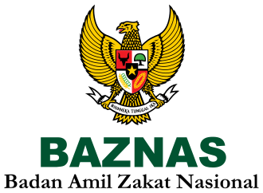

Environment
[Mockup] N95 mask is expensive and unavailable in Pontianak
Raised 3 November 2026 by Governor of Kalbar
Disclaimer The content of this communication (including any attachments) is confidential, and may be privileged or contain copyright material.

SMMP1 government, 1 Kabinet Bayangan, 1 action, last entry 3 November 2026
Governance and bureaucracy
Regional autonomy and fiscal pressure on regions
Raised 20 November 2026
The Shadow Cabinet Interior Minister asks why regions are pushing back and evaluates autonomy and regional issues.
No statements yet, last entry 20 November 2026
Health
[Mockup] Food safety in the free school meals programme
Raised 20 October 2026 by Kabinet Bayangan health desk
Kabinet Bayangan asks how the government checks food safety in the free school meals programme after reports of pupils falling ill.
SM1 government, 1 Kabinet Bayangan, 1 action, last entry 29 October 2026
All statements
| Date | Type | By | Statement | Issue |
|---|---|---|---|---|
| 3 November 2026 | Government says | Muhammad McMuhammad, Badan Amil Zakat Nasional (BAZNAS) | statement Wearing N95 is haram. | [Mockup] N95 mask is expensive and unavailable in Pontianak |
| 3 November 2026 | Kabinet Bayangan says | Shadow Minister of Health, Kabinet Bayangan | Statement from the shadow minister Baznaz head is an asshole. | [Mockup] N95 mask is expensive and unavailable in Pontianak |
| 3 November 2026 | Government action | Mutia Nyak Dien, Majelis Permusyawaratan Ulama Aceh (MPU) | N95 masks factory has been shut down and haramised in Aceh. | [Mockup] N95 mask is expensive and unavailable in Pontianak |
| 29 October 2026 | Government action | Head of agency, Badan Pengawas Obat dan Makanan (BPOM) | The agency starts sampling meals from kitchens in two regions and sends the samples to its laboratories. Mockup record to show the layout. Not a real statement. | [Mockup] Food safety in the free school meals programme |
| 24 October 2026 | Kabinet Bayangan says | Shadow minister for health, Kabinet Bayangan | Kabinet Bayangan replies that a procedure on paper does not show that kitchens follow it. | [Mockup] Food safety in the free school meals programme |
| 22 October 2026 | Government says | Spokesperson, Badan Gizi Nasional (BGN) | The agency says every kitchen in the programme follows a standard operating procedure, and that regional teams will check kitchens in the affected regions this. | [Mockup] Food safety in the free school meals programme |
An unofficial record kept by Lokanetra Information Observatory. Kabinet Bayangan does not run this page. Every statement links to its source.